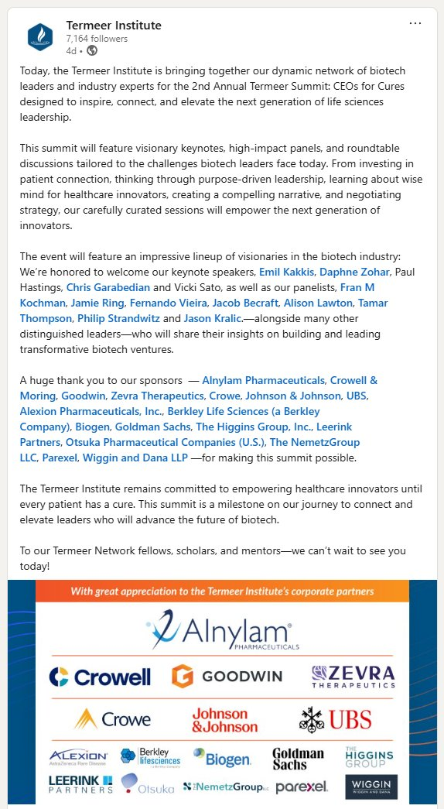

I had the opportunity to attend the 2nd Annual Termeer Summit: CEOs for Cures, organized by the Termeer Institute. The event brought together an impressive lineup of biotech leaders, founders, and industry veterans for a day of keynotes, panels, and roundtable discussions on purpose-driven leadership in life sciences.
But the thing that stuck with me the most wasn't the programming. It was the people. Getting to know the individuals in that room who had worked alongside Henri Termeer decades ago, and realizing they were still at it. Still building. Still showing up and doing remarkable things across the industry. It made me think about what leadership legacy actually looks like. Not just in the companies you build, but in the people who carry your values forward into their own careers, their own teams, their own decisions, long after they've moved on. Henri built an amazing company, but maybe the more enduring thing he built was a generation of people who understood what it meant to do the work that mattered, and went out and did more of it. The impact compounds in ways you can't measure. I left wanting to understand more about how Henri built Genzyme into what it became: the decisions, the conviction, and the institutional culture that clearly outlasted him. There's something worth studying there.